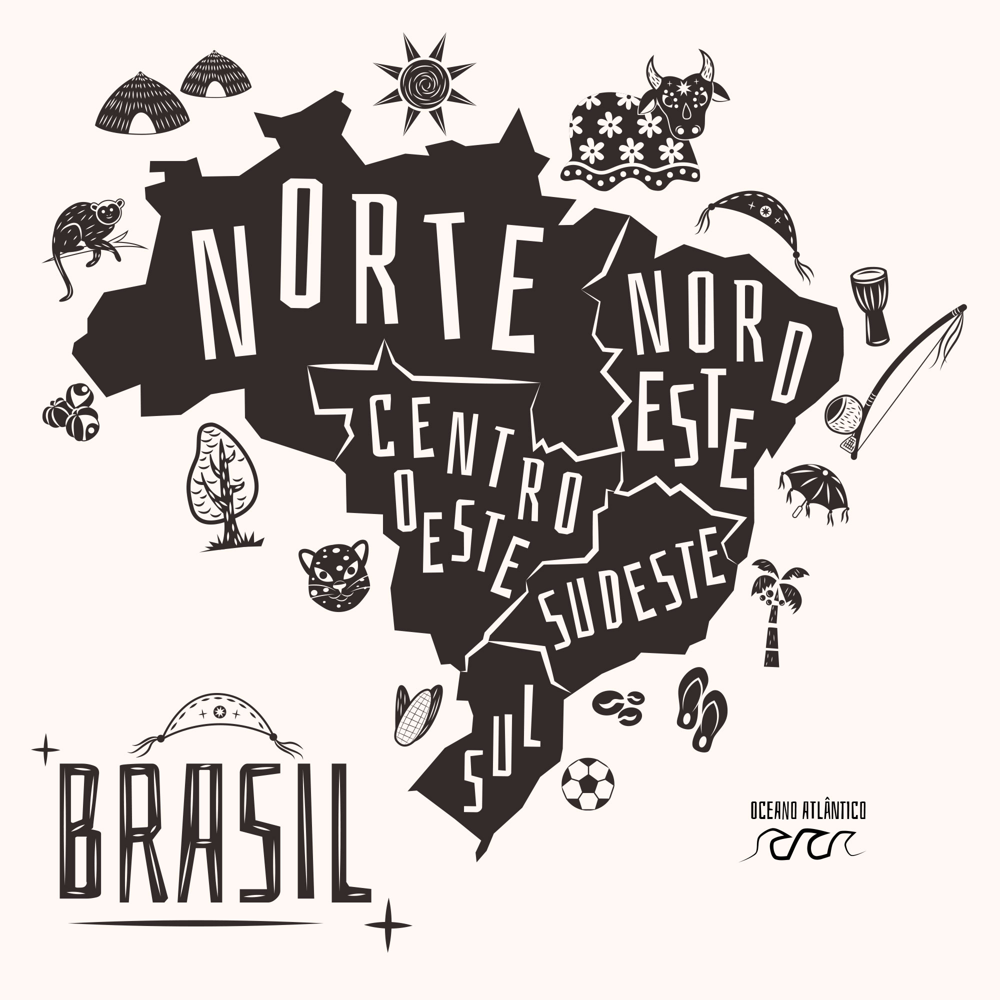
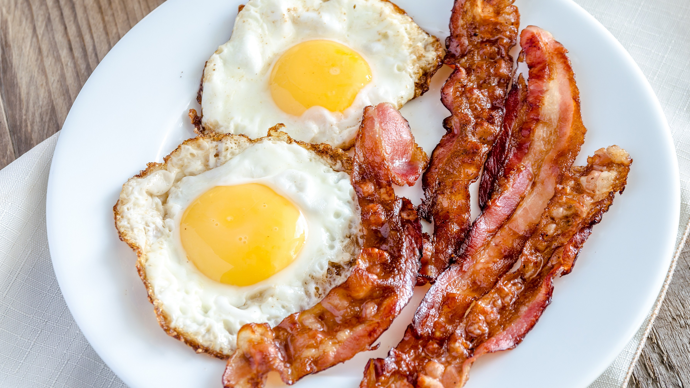
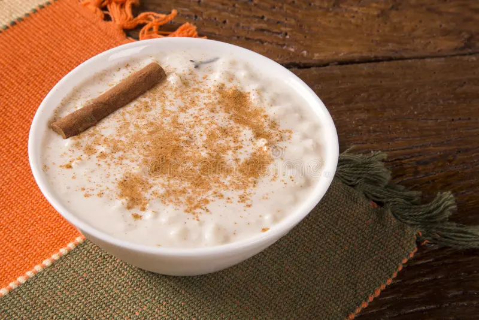

Escolha a regiao do seu café da manha

nordeste
pratos nordestinos
cuscuz
acompanha:
- carne de sol na nata
- queijo coalho assado
- cebola refogada c/ queijo


ovos c/ bacon
acompanha:
- 2 ovos
- 5 fatias de bacon frito
tapioca de carne
acompanha:
- carne de sol
- queijo coalho derretido
- tomate
- alecrim
pratos nordestinos doces

canjica
acompanha:
- canela
- acucar peneirado
cartola
acompanha:
- banana
- queijo derretido
- canela
- chocolate em po